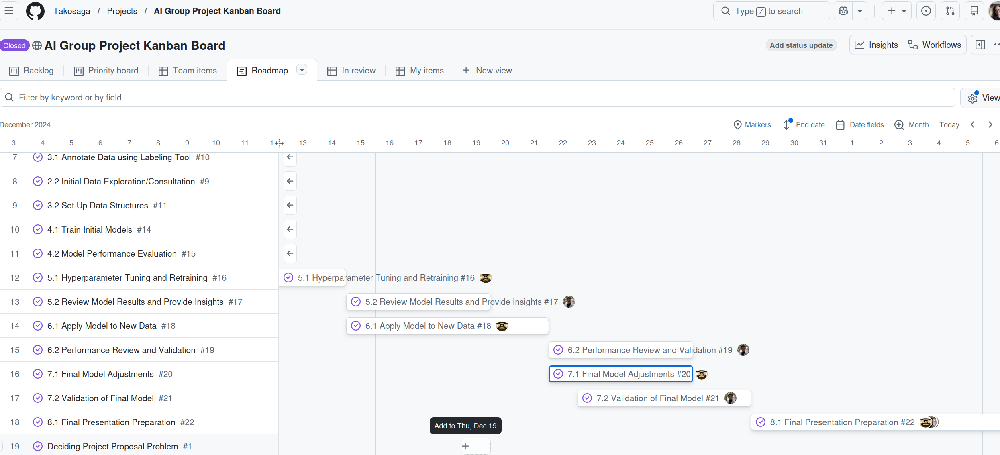
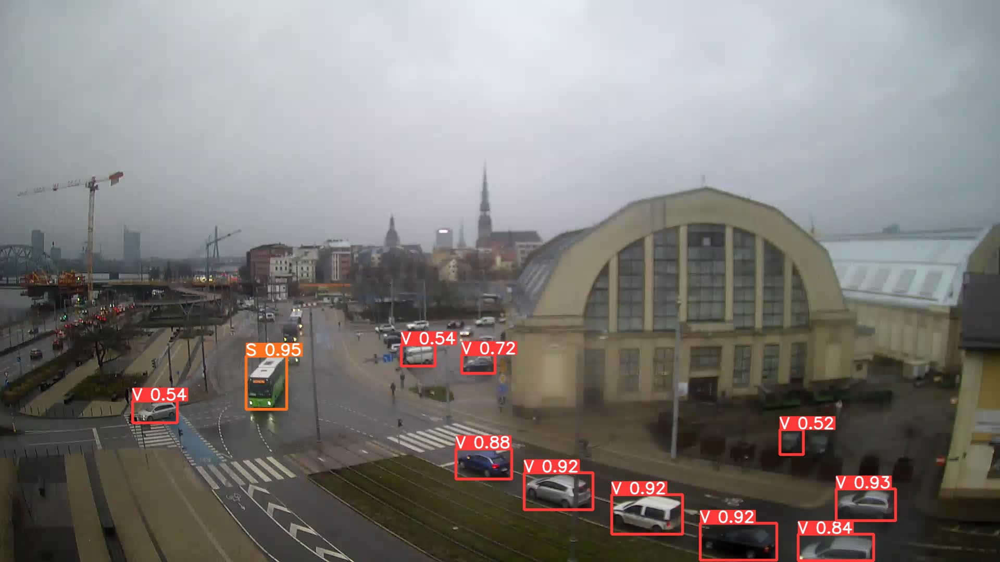

Team Lead - AI Group Project
Technical leadership experience managing a team of 3 members over 2 months, coordinating communication, documentation, and sprint tracking using GitHub Projects.
About
This role involved leading a small team through an 8-week AI group project lifecycle. As team lead, I was responsible for establishing effective communication channels, maintaining comprehensive documentation, implementing agile practices including sprint planning and progress tracking, and facilitating collaboration among team members.
Features
- Communication Management: Established and maintained clear communication protocols across distributed team members using collaborative platforms
- Documentation & Knowledge Sharing: Created and maintained comprehensive project documentation ensuring knowledge transfer and team alignment
- Sprint Planning & Progress Tracking: Implemented iterative development cycles with regular planning sessions and progress reviews to maintain momentum
- Task Assignment & Follow-up: Managed task distribution and accountability through transparent tracking systems
- Team Dynamics Facilitation: Fostered a collaborative environment that encouraged open communication and effective collaboration
Tech Stack
GitHub Projects
Git Workflow
Agile Methodology
Stakeholder Communication
Team Leadership
Links
Visualizations



×